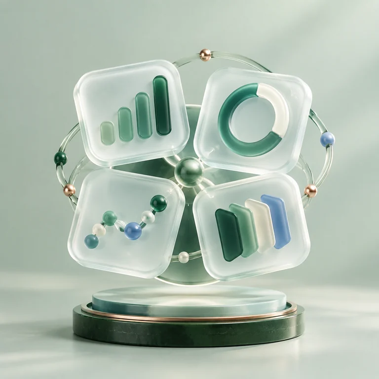

认识 GEO
搜索从链接列表，走向 AI 生成答案
当用户直接向 AI 寻找建议，品牌需要关注的不只是搜索位置，更是回答如何理解和呈现自己
- 01被提及
在相关问题中，让用户有机会看见品牌
- 02被理解
让产品优势与品牌事实得到准确表达
- 03被推荐
在合适的决策场景中建立推荐机会
让可信信息进入 AI 答案从真实提问出发，观察品牌如何被呈现
GEO 增长闭环
覆盖 GEO 优化的关键环节
以真实用户提问为起点，连接诊断、知识、内容、分发和监测，形成持续优化的工作闭环
洞察品牌可见度
从目标问题出发，查看品牌在 AI 回答中的提及、名次与评价
沉淀品牌知识
把品牌、产品与案例整理进企业知识库，形成可复用的事实基础
构建内容资产
围绕搜索意图创作内容，让品牌信息更完整、更有依据

追踪优化表现
分平台观察结果变化，为下一轮内容和策略调整提供依据
一站式 GEO 工作台
从诊断到监测，构建完整工作流
五项核心能力相互衔接，让品牌在 AI 搜索中的每一步优化都有清晰依据
持续优化路径
让每一步，都成为下一步的依据
从发现品牌可见度问题，到建立知识基础、创作与分发内容，再以跨平台监测结果驱动优化
诊断
识别可见度现状
知识库
统一品牌事实
创作
构建内容资产
分发
推进渠道触达
监测
评估优化表现
典型搜索场景
用户向 AI 提问时，你的品牌是否在场？
覆盖本地服务、教育培训、企业服务与消费品等常见决策场景
01本地服务
用户可能会问附近哪家装修公司
附近哪家装修公司
更可靠？
让服务范围、项目案例与客户评价更容易被理解
品牌可准备的信息
- 服务区域
- 真实案例
- 客户评价
02教育培训
用户可能会问哪家培训机构
哪家培训机构
口碑更好？
让课程、师资和学员反馈形成清晰的判断依据
品牌可准备的信息
- 课程设置
- 师资经验
- 学员反馈
03企业服务
用户可能会问小团队适合哪种
小团队适合哪种
协作工具？
把适用团队、核心功能和服务方式说清楚
品牌可准备的信息
- 适用团队
- 核心功能
- 服务方式
04消费品
用户可能会问这一品类，哪一个
这一品类，哪一个
更值得买？
让产品特点、适用人群和选购依据更清晰
品牌可准备的信息
- 产品特点
- 适用人群
- 选购依据
桌面端
一个工作台，
连接查看与执行
通过网页查看诊断与监测结果，按需在 Windows 桌面端继续操作
Windows 可在工作台下载，macOS 与 Linux 暂未提供
常见问答
即刻开启
从一次品牌诊断，
开启 GEO 增长
选择一个真实的用户问题，了解品牌在 AI 回答中的表现